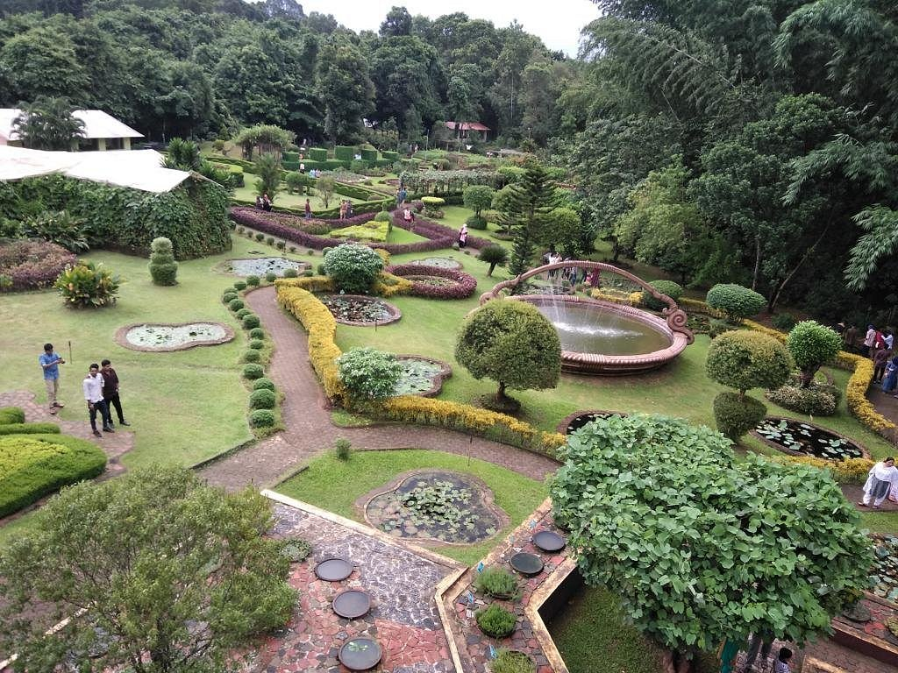

Malappuram
The hilly district of Malappuram falls among the northern districts in the state of Kerala. Closely bordered by the mountain ranges of the Western Ghats on its east, and flanked by the Arabian Sea on the West, Malappuram has an eventful history with the Zamorins of Kozhikode ruling the region for a significant period in the past. The district has also witnessed several local uprisings against the British rule, and was once a prominent center for Hindu-Vedic learning and Islamic philosophy. Historic monuments, natural attractions, ritual art forms, ethnic cuisine and age-old traditions make Malappuram a unique destination for travelers.
Places to visit :

Kodikuthimala

Nilambur Teak Museum

Mini Ooty

Kottakkunnu